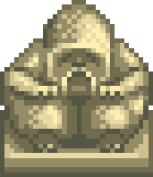

Stardew Valley
 e o nº 1 é bizarro
e o nº 1 é bizarro
que quase ninguém acha
?
?
Segredo nº 5
 ♥
♥
O piano do Elliott
Enquanto ele escreve, toque:
24323421
Ele vira e solta um coração
Segredo nº 4
dia 28
12:00
12:00
sacuda o arbusto do canto noroeste da vila
Cai uma Pelúcia Junimo
Segredo nº 3
 →
→
 →
→

A estátua que tem fome

Dê a Cereja de Joia Doce e ganhe uma Fruta-estrela
♥ curte se te ajudou
Segredo nº 2

O barco da sereia
Mercado Noturno · 15 a 17 de inverno
Depois do show, toque as conchas:
15423
Você ganha uma Pérola
Segredo nº 1


O porão do Lewis
Uma Escadaria no quarto dele leva a um labirinto secreto…
…e os Calções Roxos ganham vida e não morrem